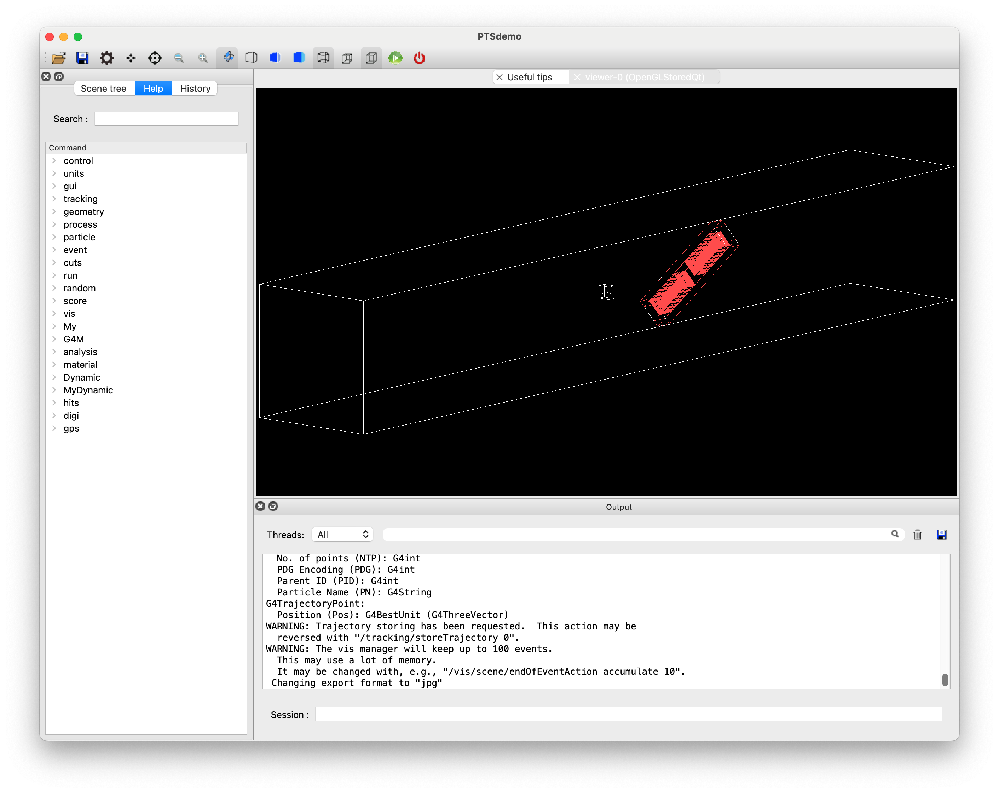

Example A3(ビーム機器登録/操作）
シミュレーション空間にビームモジュールを配置する際の利用例を解説します。
ビームモジュールの登録
ビームモジュールの実体化
以下、PTSIMの実行ディレクトリ(例: ~/PTSproject-install/PTSapps/DynamicPort)で作業します。
例題マクロファイル
PTSIMコードに付属するマクロファイルexampleA3.macをコピーして用います。
$ cp ./macros/tut/exampleA3.mac .
実行
$ ./bin/PTSdemo -i exampleA3.mac

終了
Session: exit
マクロファイルの解説
解説するコマンド部分のみを抜粋して説明します。 この例題では、ユーザ実装用に用意したG4MBMTemplateクラス（空の箱）とMulti-leaf Collimatorの機器の配置を通じて説明します。
1#
2# (PreInit State)
3/control/verbose 1
4#
5# Material
6/control/execute ./macros/common/materials.mac
7#
8# PhysicsList
9/control/execute ./macros/common/phys.mac
10#
11# System and module registration
12/G4M/System DynamicPort
13/Dynamic/Module/Room/register 525. 525. 3550. mm
14#
15/Dynamic/Module/register BMT G4MBMTemplate dummy.dat 0. 0. 0. mm 0. 0. 0. deg
16/Dynamic/Module/register MLC G4MMLCX ./data/Sample/G4MMLCX/mlc.dat 0. 0. 1000. mm 0. 0. 0. deg
17#
18# Run Initialize
19/run/initialize
20#
21# (PreInit State)
22#
23# Primary particle
24/My/PrimaryGenerator/select GPS
25/control/execute ./macros/common/gps.mac
26#
27# Beam-module settings
28#
29/G4M/Module/list 2
30#
31/G4M/Module/select BMT
32/G4M/Module/translate 0. 0. -100 mm
33/G4M/Module/install BMT
34#
35/G4M/Module/select MLC
36/G4M/Module/rotate 0. 0. 45. degree
37/G4M/Module/install MLC
38#
39#
40#/run/beamOn 10
41#
ビーム機器の登録
使用するビーム機器をPreInit Stateで、/Dynamic/Module/registerコマンドにより登録します。
コマンドの引数は順番に、モジュールの固有名{mname}、モジュールタイプ{mtype}、パラメタファイル名{param}、配置座標と単位、回転角と単位です。
PreInit> /Dynamic/Module/register {mname} {mtype} {param} {x} {y} {z} {lunit} {rx} {ry} {rz} {runit}
配置座標や回転角の設定を省略した場合は、原点に回転なしの配置になります。 モジュールタイプ{mtype}は、モジュールのクラス名で、パラメタファイル{param}と対応します。利用可能なモジュールタイプとパラメタの書式については解説を参照してください。
ビーム機器の選択と配置条件の再設定
ビーム機器の配置座標や回転は、ビーム機器名を引数に/G4M/Module/selectコマンドで選択した後に、/G4M/Module/translateコマンド及び/G4M/Module/rotateコマンドで変更することができます。
ビーム機器の実体化
設定したビーム機器を治療室に実体化して配置するには、ビーム機器名を引数に/G4M/Module/installコマンドを実行します。先に示したビーム機器の選択と配置条件の再設定は、実体化した後でも可能です。
(注）可視化で確認するには描画し直しが必要です。/vis/drawVolume.
Idle> /G4M/Module/select MLC
Idle> /G4M/Module/rotate 0. 0. 0. degree
Idle> /vis/drawVolume
ビーム機器の登録状況の確認
上記マクロファイルにはありませんが、登録されているビーム機器の一覧表示が可能です。
PreInit>でもIdle>でも確認可能です。
Idle> /G4M/Module/list
+++ G4MParticleTherapySystemMessenger List +++
* Module BMT Active Mass-Geom
* Module MLC Active Mass-Geom
* Module Room Active Mass-Geom
表示レベル2を指定すると、配置座標情報を確認できます。
Idle> /G4M/Module/list 2
+++ G4MParticleTherapySystemMessenger List +++
* Module BMT Active Center: 0 0 0 width: 50 50 30 mm
* Module MLC Active Center: 0 0 1000 width: 500 125 70 mm
* Module Room Active Center: 0 0 0 width: 525 525 3550 mm